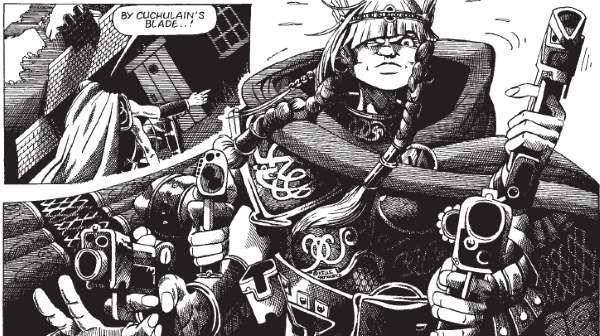

Spinning off from Strontium Dog, this seeks to tell short tales of Dogs other than Alpha (or McNulty, or Red). Oftentimes, these end up being jokes at the expense of each individual's mutation, although there are some subtler exceptions.
Art by Simon Jacob
| Story Title | Parts | Pages | w indicates a wraparound coverCovers | Year(s) | Issues | Writer | Artist | Colourist | Letterer |
|---|---|---|---|---|---|---|---|---|---|
| Back-to-Front Jones | 1 | 5 | 0 | 1988 | Reprints: M345 (supplement)578 | Alan Grant | Colin MacNeil | [b&w] | Gordon Robson |
| Tom "Birdy" Lilley | 1 | 5 | 0 | 1988 | Reprints: M345 (supplement)579 | Alan Grant | Colin MacNeil | [b&w] | Gordon Robson |
| Freddy 'Chameleon' Finegan | 1 | 5 | 0 | 1989 | Reprints: M345 (supplement)612 | Stewart Edwards | Simon Jacob | [b&w] | John Aldrich |
| Edward 'Spud' O'Riley | 1 | 5 | 0 | 1989 | Reprints: M345 (supplement)613 | Stewart Edwards | Simon Jacob | [b&w] | Tom Frame |
| Maeve the Many-Armed | 2 | 10 | 0 | 1989 | Reprints: M345 (supplement)617-618 | Hilary Robinson | Simon Jacob | [b&w] | Nick Abadzis |
| 'Sting' Ray | 2 | 10 | 0 | 1989 | Reprints: M345 (supplement)623-624 | Hilary Robinson | Simon Jacob | [b&w] | Steve Potter |
| Ernest 'Froggy' Natterjack | 1 | 5 | 0 | 1989 | Reprints: M346 (supplement)625 | Stewart Edwards | Mick Austin | [b&w] | Tom Frame |
| Jerry 'Ratty' Cagney | 1 | 5 | 0 | 1989 | Reprints: M346 (supplement)626 | Stewart Edwards | Mick Austin | [b&w] | Tom Frame |
| Maeve the Many-Armed: Niall of the Nine Sausages | 3 | 15 | 0 | 1989 | Reprints: M345 (supplement)636-638 | Hilary Robinson | Simon Jacob | [b&w] | Tom Frame Jack Pottervarious |
| Chris 'Moosey' Day | 1 | 5 | 0 | 1989 | 649 | Stewart Edwards | Ron Smith | [b&w] | Gordon Robson |
| year | episodes | pages |
| 1978 | 0 | 0 |
| 1979 | 0 | 0 |
| 1980 | 0 | 0 |
| 1981 | 0 | 0 |
| 1982 | 0 | 0 |
| 1983 | 0 | 0 |
| 1984 | 0 | 0 |
| 1985 | 0 | 0 |
| 1986 | 0 | 0 |
| 1987 | 0 | 0 |
| 1988 | 2 | 10 |
| 1989 | 12 | 60 |
| 1990 | 0 | 0 |
| 1991 | 0 | 0 |
| 1992 | 0 | 0 |
| 1993 | 0 | 0 |
| 1994 | 0 | 0 |
| 1995 | 0 | 0 |
| 1996 | 0 | 0 |
| 1997 | 0 | 0 |
| 1998 | 0 | 0 |
| 1999 | 0 | 0 |